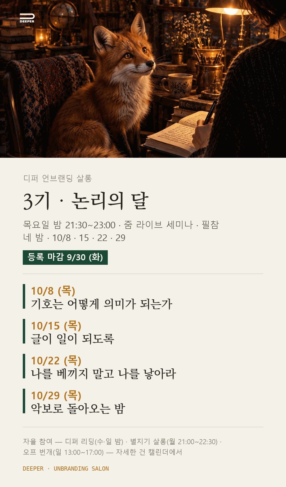

3기 · 논리의 달
내 일을 아는 나만의 AI 에이전트를 짓는 한 달
2026. 10. 8 — 10. 29 · THU 21:30
논리의 달을 엽니다
논리의 달을 엽니다. 10월 8일 목요일 밤 아홉 시 반, 지금 걷고 계신 사막 그대로예요.
문법의 달에 각자의 원천을 캤고, 마지막 밤에 씨앗에 이름을 붙였어요. 논리의 달은 그 재료로 나의 시스템을 짓는 한 달이에요. 내 일을 알고 내 결로 움직이는 AI 비서가 태어나요. 마지막 주엔 그 모두를 담은 악보 한 장이 손에 남아요.
문법의 달 서른세 걸음에서 디퍼님이 여우에게 먹인 것이 논리의 달 재료예요. 곁을 지키던 여우가 이제 디퍼님의 일을 읽기 시작해요.
돌아가는 고리
공리 → 독자 → 고리 → 악보 → 다시 공리.
층을 올라갔는데 처음 자리로 돌아와 있는 것. 호프스태터는 그것을 이상한 고리라 불렀습니다.
어떻게 걷나요
매주 한 장씩, 내 시스템의 부품을 짓습니다. 기본기는 프롬프트와 컨텍스트, 그 위에 규칙책과 고리. 네 장이 쌓이면 마지막 밤에 겹쳐 놓기만 해도 악보 한 장이 됩니다. 매주 『괴델, 에셔, 바흐』의 한 대목을 함께 읽습니다.
10 / 08 (THU) · WEEK 01
기호는 어떻게 의미가 되는가
규칙이 있어야 게임이 됩니다. 씨앗 문장을 공리로 세우고, 내 형식 체계의 규칙을 적습니다. 내 AI에게 주는 첫 시스템 프롬프트입니다.
- 그 밤에 손에 남는 것
- 나의 형식 체계 v1 — 공리 셋과 변환 규칙 셋을 한 장에. 여우가 파일로 남깁니다.
- 함께 읽는 대목
- GEB 서론 「음악-논리학적 헌정」과 1장 MU-수수께끼. MI에서 출발해 네 가지 규칙만으로 MU를 만들 수 있는가. 규칙만 들여다봐서는 답이 보이지 않습니다. 뜻은 바깥에서 주어지지 않고, 규칙을 따라 움직이는 동안 안에서 생깁니다.
- 그 주의 실습
- 공리(시스템 프롬프트). 값을 치르더라도 타협하지 않은 것 셋, 만들 때마다 자꾸 반복되는 나의 방식 셋. 다짐은 공리가 아닙니다. 공리는 값을 치른 자리에서 나옵니다.
10 / 15 (THU) · WEEK 02
글이 일이 되도록
내 구조가 누구에게 옮겨 닿는지. 이상적 독자 한 사람을 그립니다. 내 AI가 늘 바라볼 페르소나 설계입니다.
- 그 밤에 손에 남는 것
- 독자·변환 한 장 — 단 한 사람의 초상과, 이전의 마음에서 이후의 마음으로 가는 변환.
- 함께 읽는 대목
- GEB 「게 카논」과 「무의 헌정」. 그 대화는 게 카논에 관해 이야기하면서 동시에 게 카논으로 되어 있습니다. 읽는 이는 절반을 지나서야 그것을 알아챕니다. 진짜는 거꾸로 읽어도 같고, 그러나 각도를 바꾸는 사람에게만 떠오릅니다.
- 그 주의 실습
- 독자(페르소나)와 첫 고리. 얼굴이 떠오르는 한 사람과, 그가 밤잠을 설치는 이유. 그리고 첫 고리 — 내 모닝페이지가 나를 읽은 여우로 돌아오고, 비춰진 내가 한 줄을 더하고, 그 한 줄이 다시 재료가 됩니다.
10 / 22 (THU) · WEEK 03
나를 베끼지 말고 나를 낳아라
글이 글을 낳고, 일이 일을 낳는 고리를 설계합니다. 반복 업무를 에이전트에게 맡기는 워크플로우 루프가 여기서 나옵니다.
- 그 밤에 손에 남는 것
- IP 지도와 오퍼 초안 한 장 — 씨앗 하나가 여섯 달 뒤, 한 해 뒤, 세 해 뒤에 어디까지 자라 있을지 세 줄. 그리고 지금 당장 건넬 수 있는 도움 하나를 세 칸으로. 여기에 발행 고리 다섯 줄이 붙습니다.
- 함께 읽는 대목
- GEB 「어느 애연가의 교훈적 사색」과 「과연 위대한 게로다」. 게는 마침내 완전성을 포기하고, 무엇이든 트는 전축 대신 자기 스타일의 음반만 가려 트는 살아남는 전축을 택합니다. 다음 대화에서 그 게는 악보를 불어 참인 명제를 아름다움으로 알아듣습니다. 왜 아름다운지는 규칙으로 말하지 못하면서요.
- 그 주의 실습
- 자라는 고리 · IP 지도 · 오퍼 초안. 복제는 덧셈이라 내 손이 멈추면 같이 멈추고, 증식은 곱셈이라 오늘 지은 것이 내일 짓는 재료가 됩니다. 이미 매일 하는 일의 꼬리에 잇습니다. 새 습관은 만들지 않습니다.
10 / 29 (THU) · WEEK 04 · 종강
악보로 돌아오는 밤
고리를 짓고, 그 고리를 깨는 법까지. 한 달의 낱장을 한자리에 모읍니다.
- 그 밤에 손에 남는 것
- 악보 한 장 — 나의 하네스 v1. 공리 셋, 규칙 셋, 단 한 사람, 지도, 고리, 가장 작은 것, 루틴. 새로 쓰지 않고 겹쳐 놓습니다. 그런데 겹쳐 놓으면 낱장에는 없던 것이 들립니다.
- 함께 읽는 대목
- GEB 「모든 층위에서 패턴을 찾아내기」와 「나무늘보 카논」. 연못이 얕다면 밑바닥까지 훤히 보이고 거기엔 고리들뿐일 것입니다. 그러나 그 연못은 너무 깊고 탁해서, 위에서 보면 고리는 안 보이고 마음이 보입니다. 마지막 대화는 그 자체가 뒤집혀 느리게 되돌아오는 카논으로 되어 있습니다.
- 그 주의 실습
- 악보 한 장(하네스). 검산은 둘입니다. 소리 내어 되읽어 입에 안 붙는 줄을 찾아 고치고, 그 악보의 한 줄을 단 한 사람에게 실제로 건넵니다. 돌아온 반응 한 줄이 이 달의 첫 검산입니다.
『괴델, 에셔, 바흐』는 사지 않으셔도 됩니다
이 달의 뼈대는 더글러스 호프스태터의 『괴델, 에셔, 바흐』입니다. 어렵게 배우지 않습니다. 단순한 규칙이 쌓여 자기를 낳는 구조가 되고, 구조가 하모니를 이루는 과정 — 그것만 각자의 재료로 한 번 걸어 봅니다.
책을 곁에 두고 싶으시면 까치 개역판(2017) 단권을 준비하시면 좋습니다. 다만 읽을 대목의 PDF를 긱어스 강의실 자료실에 올려 두니, 구매하지 않으셔도 됩니다. 네 밤에 읽는 분량은 다 합쳐 백서른 쪽 남짓이고, 필요한 대목은 살롱에서 함께 읽습니다.
코딩이나 기술을 몰라도 됩니다. 재료는 디퍼님의 글입니다. 문법의 달에 쓴 글이 그대로 첫 시스템 프롬프트의 재료가 됩니다. 세팅은 살롱에서 함께, 한 걸음씩 갑니다.
3기 논리의 달 · 카드

논리의 달 안내
| 네 밤 | 10월 8일 · 15일 · 22일 · 29일 · 목요일 |
|---|---|
| 시간 | 밤 21:30 – 23:00 · 줌 라이브 세미나 |
| 참여 | 필참 — 네 밤은 함께 앉는 자리입니다 |
| 사막 | 나미브 · 도도 · 영크크 — 지금 자리 그대로 |
| 진행 | 퍼핀 · 별지기 |
| 참가비 | 250,000원 — 문법의 달과 같습니다 (시작 전 전액 환불) |
| 입금 계좌 | 국민은행 640401-04-330210 예금주: 이**(클래식북스) 신청서를 내신 뒤 입금해 주시면 등록이 확정됩니다. 9월 30일(화)까지. |
| 등록 기한 | 9월 30일 (화) |
지금 걷고 계신 사막 그대로,
한 층 더 깊이
한 달 전의 나와 지금의 나 사이에서
달라진 것 하나를 들고 오시면 충분합니다.
이 자리는 3기 디퍼님의 것입니다. 9월 30일 화요일까지 답을 주시면 디퍼님의 자리를 그대로 두겠습니다.